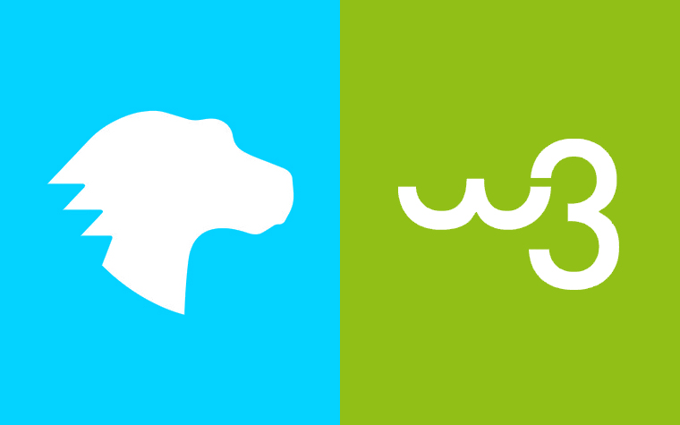
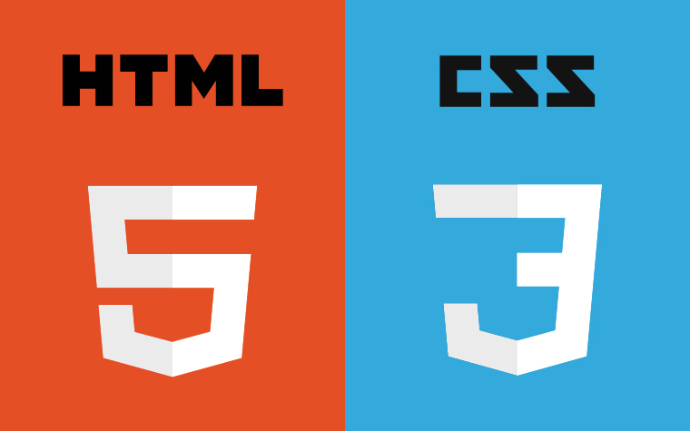
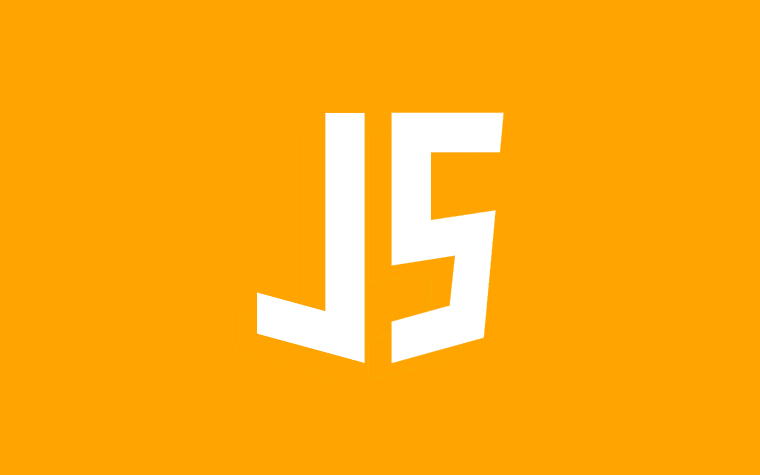

<!DOCTYPE html>
<html lang="en">
  <head>
    <meta charset="UTF-8" />
    <meta http-equiv="X-UA-Compatible" content="IE=edge" />
    <meta name="viewport" content="width=device-width, initial-scale=1.0" />
    <link rel="stylesheet" href="style.css" />
    <link rel="stylesheet" href="https://www.w3schools.com/w3css/4/w3.css" />
    <title>Giới thiệu</title>
  </head>
  <body>
    <div class="banner">
      
    </div>
    <div class="menu">
      <ul>
        <div class="menu1">
          <li>
            <a href="index.html" style="text-decoration: none">Homepage</a>
          </li>
        </div>
        <div class="menu2">
          <li>
            <a href="about.html" style="text-decoration: none">About</a>
          </li>
        </div>
        <div class="menu3">
          <li>
            <a href="contact.html" style="text-decoration: none">Contact</a>
          </li>
        </div>
      </ul>
    </div>
    <div class="wrap">
      <div style="text-align: center">
        <h1>Bí kíp tự học thiết kế web hiệu quả dành cho người mới</h1>
        <p>POSTED ON13/10/2020  evondev</p>
        
      </div>
      <div style="margin-left: 250px; margin-right: 250px">
        <h1>Nội dung bài viết</h1>
        <ul style="list-style: none">
          <li><a href="#a" class="aqua"># Học HTML CSS</a></li>
          <li><a href="#b" class="aqua"># Học JS</a></li>
          <li>
            <a href="#c" class="aqua"># Vấn đề khi tự học thiết kế web</a>
          </li>
          <li>
            <a href="#d" class="aqua"># Con đường của bản thân mình </a>
          </li>
          <li>
            <a href="#e" class="aqua"
              ># Quay lại vấn đề khi tự học thiết kế web</a
            >
          </li>
          <li><a href="#f" class="aqua"># Học tiếng Anh</a></li>
          <li>
            <a href="#g" class="aqua"># Cải thiện con mắt thẩm mỹ</a>
          </li>
          <li><a href="#h" class="aqua"># Vấn đề lấy tài nguyên</a></li>
          <li><a href="#i" class="aqua"># Các kỹ năng khác</a></li>
          <li>
            <a href="#j" class="aqua"
              ># Theo dõi những trang, người nổi tiếng</a
            >
          </li>
          <li><a href="#k" class="aqua"># Lời chưa kết</a></li>
        </ul>
        <p>
          Sau khoảng thời gian viết bài về chia sẻ kiến thức thì hôm nay mình
          xin chia sẻ cho các bạn bí kíp tự học thiết kế web hiệu quả dành cho
          người mới. Bài này sẽ rất là dài nhưng nó rất quan trọng cho các bạn.
          Đặc biệt là các bạn mới học, chưa có định hướng rõ ràng hay mindset,
          mất phương hướng…
        </p>
        <p>
          Mình sẽ chia sẻ hết tất cả cách học, các khóa học, các vấn đề khi học,
          các câu hỏi, các nguồn tài nguyên miễn phí và có phí để giúp cho chúng
          ta học hiệu quả mà lại tiết kiệm thời gian nữa.
        </p>
        <p>
          Để tự học thiết kế web hiệu quả thì các bạn cần phải học trước HTML
          CSS JS và một chút Photoshop(để cắt hình ảnh, lấy mã màu….). Nó là cốt
          lõi nền tảng nên chúng ta phải học chắc và vững vàng để sau này khi
          chúng học nâng cao lên như SASS PUG JS Framework, JS Library thì chúng
          ta mới có thể hiểu dễ dàng hơn….
        </p>
        <h2 id="a"># Học HTML CSS</h2>
        <p>
          Để học HTML CSS thì các bạn nên học tại MDN hoặc
          <a href="https://www.w3schools.com/html/">W3schools</a>, nhưng mình
          khuyến khích học tại MDN hơn vì nó chia sẻ kiến thức rất chi tiết kèm
          ví dụ cụ thể dễ hiểu. Nếu có nhiều thời gian thì nên học ở 2 trang
          luôn cũng được vì học nhiều biết nhiều mà, mỗi trang có một cái hay
          riêng.
        </p>
        
        <p>
          Để nâng cao kiến thức hơn thì các bạn nên tham khảo thêm ở trang
          CSS-Tricks, freeCodeCamp, Tympanus…. Ở những trang này có nhiều kiến
          thức rất hay và bổ ích chuyên sâu cho các bạn. Có hướng dẫn chi tiết
          kèm theo code có thể tải về hoặc làm và kiểm tra online luôn.
        </p>
        <p>
          Nếu các bạn lười đọc thì các bạn có thể tự học thiết kế web trên
          Youtube bằng cách gõ “học HTML CSS cho người mới” hoặc trong tiếng anh
          là “Learn HTML CSS for beginners” ra một đống thích học cái nào thì
          chọn cái đó và học thôi nà.
        </p>
        <p>
          HTML thì chủ yếu các bạn cần nắm vững kiến thức về các thẻ(<em
            class="red"
            >tag</em
          >), ví dụ các thẻ thông dụng như thẻ div, hay các thẻ semantic trong
          HTML5 như
          <em class="red">header, footer, nav, section, aside, article</em>, các
          thẻ về danh sách như <em class="red">ul,ol</em>, về bảng như
          <em class="red">table, th, thead, tbody, tr, td.</em>. Mỗi thẻ được
          tạo ra với một mục đích khác nhau vì thế cần nắm vững chúng để sử dụng
          cho đúng cách.
        </p>
        <p>
          Ví dụ các thẻ về Form như input là các thẻ tự đóng có dạng
          &lt;input&gt; type="text"/> thì không thể chèn nội dung ở giữa chúng
          như các thẻ &lt;h2&gt;nội dung&lt;/h2&gt; được, nếu các bạn làm như
          thế này &lt;input&gt; type="text">nội dung&lt;/input&gt;là sai cấu
          trúc hoàn toàn. Thẻ a thì dùng href để dẫn link chứ không phải thẻ div
          có href như này &lt;div &gt; href="google.com">&lt;/div&gt;, các dữ
          liệu hiển thị dưới dạng bảng thì dùng các thẻ về table thì sẽ tốt hơn
          nếu dùng toàn div….
        </p>
        <p>
          Ngoài ra các bạn cần nắm vững sự khác nhau giữa Class và Id, Class có
          thể dùng đi dùng lại còn Id là duy nhất, trong một trang chỉ có một Id
          và không được trùng Id với nhau. Và học thêm một chút về SEO để biết
          rằng trong một trang web thì nên chỉ có tối đa 1 thẻ h1 mà thôi. Hạn
          chế dùng Id cho clean code và CSS sau này. Trường hợp nào cần phải
          dùng thì mới dùng, không thì dùng Class nhé.
        </p>
        <p>
          Và còn phải học thêm về BEM để biết cách đặt tên cho chuẩn chút, ít
          nhất thì lúc các bạn đặt tên Class hay Id người ta đọc vào hiểu bạn
          đang làm gì, đừng đặt tên theo tiếng Việt như
          &lt;div&gt;class="hinh_anh_o_giua_to">&lt;/div&gt; kiểu vậy thì nên
          đặt theo tiếng Anh như
          &lt;/div&gt;class="image__big--center">&lt;/div&gt; chẳng hạn… Các bạn
          có thể nhấn vào đây để xem thêm về BEM hoặc tham khảo nhiều links khác
          dưới đây:
        </p>
        <ul>
          <li>
            https://www.smashingmagazine.com/2016/06/battling-bem-extended-edition-common-problems-and-how-to-avoid-them/
          </li>
          <li>https://scalablecss.com/images/BEM-cheat-sheat.pdf</li>
          <li>http://getbem.com/naming/</li>
        </ul>
        <p>
          Nếu các bạn thích học thông qua video thì có thể tham khảo thêm ở
          trang Scrimba, một trang dạy lập trình trực tuyến với nhiều khoá học
          miễn phí, mình có để 2 links khoá HTML CSS cơ bản dưới đây cho các bạn
          tham khảo nhé
        </p>
        <ul>
          <li>https://scrimba.com/g/ghtml</li>
          <li>https://scrimba.com/g/ghtmlcss</li>
        </ul>
        
        <p>
          Về kiến thức CSS thì các bạn nên học chắc và kỹ, tốt nhất là nên thực
          hành nhiều thì mới mau giỏi và thành thạo được. Đặc biệt là về layout
          thì nên học CSS Flexbox hoặc CSS Grid, các thuộc tính vị trí position,
          các đơn vị trong khi làm, các pseudo class như before after, các thuộc
          tính transition, animation, transform, display, các hàm như calc, cách
          làm web hiển thị responsive, màu sắc đẹp….
        </p>
        <p>
          Nếu không hiểu cái nào thì Goolge, Stackoverflow hoặc đăng lên các
          group lập trình hỏi. Sẽ có rất nhiều người sẵn lòng giúp đỡ bạn tuy
          nhiên không nên quá phụ thuộc, cái nào khó quá mò mãi làm mãi chưa
          hiểu chưa ra được như mong muốn thì hãy hỏi nhé ^^.
        </p>
        <h2 id="b"># Học JS</h2>
        <p>
          Javascripts rất là sida nên việc học để hiểu nó rất là hại não luôn.
          Tuy nhiên mình cũng sưu tập được vài trang để tự học JS khi mới bắt
          đầu và một trong số đó chính là MDN cũng như học HTML và CSS thì MDN
          dạy JS cũng rất là kỹ càng và chi tiết. Nhiều người nước ngoài họ cũng
          hay học và tìm hiểu ở trang này.
        </p>
        
        <div>
          Tiếp theo đó chính là freeCodeCamp, Codecademy, Rithm School ở trên
          các trang này các bạn sẽ được học và làm online luôn, có từng phần cụ
          thể, hướng dẫn và thực hành đi kèm với nhau giúp các bạn mau hiểu và
          tiến bộ hơn. Ngoài ra các bạn nên vào Medium để đọc thêm kiến thức, ở
          đây các tác giả chia sẻ rất là hay và bổ ích.
          <p>
            Các bạn nên tìm hiểu kỹ các concept như
            <b> Scope, Object, Closure, Callback, Promise, Pure function… </b>ác
            hàm và các cách xử lý<b> Array, Object, String </b>à nữa là
            Javascript <b>Design Pattern</b> cũng phải biết vài mẫu như module
            pattern, prototype, observer…
          </p>
          <p>
            Nhưng mình vẫn khuyến khích các bạn học Tiếng Anh hơn. Vì sau này đi
            làm cho các công ty thì tài liệu hầu hết là Tiếng Anh đấy. Nên chịu
            khó học Tiếng Anh từ bây giờ là vừa.
          </p>
          <p>
            Các bạn có thể tham khảo khoá Javascripts của Jonas trên Udemy tại
            đây. Khoá này dạy cực kỳ chất lượng và dễ hiểu nếu các bạn hiểu được
            tiếng Anh nha.
          </p>
          <h2 id="c"># Vấn đề khi tự học thiết kế web</h2>
          <p>
            Tuy nhiên vì tự học nên mọi thứ các bạn phải tự mày mò, tìm hiểu
            không hiểu thì Google mà ra toàn Tiếng Anh rồi lại phải dùng Google
            dịch nếu không rành Tiếng Anh nữa. Như vậy thì sẽ rất mau nản và
            chắc chắn kết quả là không hiệu quả.
          </p>
          <p>
            Mình thấy nhiều bạn đăng lên nhiều nhóm hỏi các kiến thức rất là cơ
            bản mà không chịu khó tìm hiểu trước đó. Đó là một trong những lý do
            khi tự học mà hầu hết các bạn mới gặp phải. Vì thế mình khuyến khích
            các bạn nên tìm một mentor cho riêng mình hoặc tìm học các khóa học
            online hoặc offline ở các trung tâm nếu như các bạn có tiền.
          </p>
          
          <p>
            Nhiều người sẽ nói các kiến thức này ở trên mạng chia sẻ miễn phí
            đầy, bỏ tiền đi học chi cho phí tiền. Đúng! Nhưng miễn phí có cái
            giá của miễn phí và có phí có cái giá của có phí. Tuy nhiên miễn phí
            chưa chắc đã dở và ngược lại có phí chưa chắc đã ngon. Quan trọng là
            cách chúng ta tiếp thu chúng như thế nào mà thôi.
          </p>
          <p>
            Và sẽ có nhiều người họ không thể tự mày mò tự học được nên việc bỏ
            tiền, bỏ thời gian đi học cũng đúng vì mỗi người có một nhu cầu hoàn
            cảnh khác nhau mà. Đúng không nào ?
          </p>
          <p>
            Trước giờ học có phí hay miễn phí mình đều đã học nhưng thực sự mà
            nói học mất phí mình cảm thấy có động lực học hơn và mau tiến bộ hơn
            là vì mất tiền rồi mà không chịu học, không cố gắng là phí tiền
            lắm(tiền đi làm, tiền để dành, tiền ba mẹ cho….)
          </p>
          <p>
            Thì ở đây mình sẽ chia sẻ cho các bạn theo 2 hướng đó là học miễn
            phí và có phí. Học miễn phí thì mình có nói ở trên rồi đó. Tuy nhiên
            đó vẫn chưa phải là cách tự học thiết kế web hiệu quả nhất.
          </p>
          <p>
            Cách hiệu quả nhất theo quan điểm của mình là tìm công ty xin thực
            tập vì ở đó là bạn sẽ làm dự án thực tế luôn, và sẽ gặp nhiều vấn đề
            mới lạ hơn, đôi khi lại có mentor hướng dẫn tận tình, làm việc với
            team người này người nọ, gặp vấn đề này vấn đề nọ, mở rộng kiến
            thức, tư duy sâu rộng từ đó giúp bạn mau giỏi hơn.
          </p>
          <p>
            Và đó là bước đi đúng đắn đã giúp mình từ một fresher sau khi đi
            thực tập và trở thành một Frontend Developer như hiện tại. Các bạn
            có thể xem phần dưới về con đường tự học thiết kế web của mình để có
            động lực nhé.
          </p>
          <h2 id="d"># Con đường của bản thân mình</h2>
          <p>
            Hồi lúc mình mới ra trường mình lúc đấy HTML CSS cực kỳ gà(khoảng 5
            năm trước) và mình đã xin đi thực tập tại một công ty ở bên Tân Bình
            gần sân bay. Được hỗ trợ mỗi tháng 1triệu. Đi chiếc xe Super Cub từ
            Nhà Bè sang tới đó gần cả tiếng.
          </p>
          <p>
            Ở đây mình được một chị Manager hướng dẫn cho mình cách học các kiến
            thức cơ bản về HTML và CSS từ trang W3School rồi hỏi đáp kiến thức
            hôm nay đã học những gì những gì rồi kiểm tra xem mình có thực sự
            hiểu về các thẻ hay thuộc tính CSS đó không và cho bài tập về nhà để
            làm và kết quả là bị ăn chửi tè le vì mình code sai quá trời sai.
            Lúc đấy khá là nản vì bản thân còn quá yếu.
          </p>
          <p>
            Mình học rồi làm và ăn chửi mỗi ngày, tuy bị ăn chửi nhưng cảm thấy
            vui vì kiến thức được cải thiện rất nhiều sau 4 tháng thực tập mình
            cảm thấy tự tin hẳn ra vì kiến thức thấy lên 1 bậc rõ rệt.
          </p>
          <p>
            Sau 4 tháng thực tập, cày cuốc mình học hỏi được rất nhiều thứ , tuy
            nhiên vì đi làm rất là xa nên mình đã xin nghỉ ở đó.
          </p>
          <p>
            Nhờ vậy mà lúc nghỉ thực tập đi phỏng vấn nhiều công ty khác trả lời
            về kiến thức và làm bài test ổn hơn cũng như học hỏi được từ chị
            manager vài kỹ năng chém gió nữa. Sau đó mình được nhận làm tại một
            công ty Singapore có trụ sở ở VN. Tự làm một mình Frontend từ A-Z ở
            công ty đó cho tới công ty mới hiện tại vẫn làm Frontend Developer.
            Và giờ thì trình độ của mình đã khác hẳn 5 năm trước nhiều rồi.
          </p>
          <h2 id="e"># Quay lại vấn đề khi tự học thiết kế web</h2>
          <p>
            Đây là vấn đề của rất nhiều bạn trẻ, khi trên mạng có nhiều nguồn
            quá, vậy chọn nơi nào học uy tín, chất lượng mau lên trình. Thì đây
            mình xin chia ra 2 trường hợp, một là học Tiếng Việt, hai là học
            Tiếng Anh.
          </p>
          
          <p>
            Trường hợp các bạn muốn học Tiếng Việt thì cũng có 2 loại đó vẫn là
            online hoặc offline. Nếu các bạn học online thì các bạn có thể tham
            khảo 2 khoá học của mình, một khoá dạy về HTML CSS từ cơ bản tới
            nâng cao một cách chi tiết và đầy đủ chuyên sâu, có bài tập, sửa bài
            góp ý 11 luôn, giúp mau lên trình vù vù và các bạn sẽ học online qua
            phần mềm Zoom, các bạn có thể đọc thêm chi tiết tại đây, còn khoá
            thứ 2 là khóa học qua video có sẵn do mình quay giá rẻ hơn khoá qua
            Zoom nhiều với hơn 120 videos đang bán tại KTcity, các bạn có thể
            nhấn vô đây để tham khảo nha. Đừng quên nhập mã EVONDEV để được giảm
            thêm 50k(Sau ngày 20/10/2020).
          </p>
          <p>
            Còn offline thì nó yêu cầu tiền nhiều hơn vì học offline là cần có
            người dạy và chỉ bảo tận tình cũng như bài tập về nhà, deadline…
            nhưng chắc chắn sẽ mau lên trình hơn vì bạn mất nhiều tiền mà không
            chịu học thì coi như bạn lỗ là cái chắc. Ai chả sợ tiếc tiền nên mất
            tiền thì phải ráng học thôi nà. Sau này nếu mình có dạy offline mình
            sẽ thông báo tới cho các bạn nha.
          </p>
          <p>
            Trường hợp các bạn muốn học Tiếng Anh ở Việt Nam thì chắc chỉ có
            online thôi. Và các khóa học online Tiếng Anh thì mình khuyến khích
            các bạn học ở trang Udemy với một khóa học có giá chỉ 10$/khóa (Khi
            đã sử dụng Coupon giảm giá)
          </p>
          <p>
            Mình đã học nhiều khóa học online tại Udemy và tìm được vài khóa học
            rất chất lượng mà các bạn có thể mua tại Udemy. Các bạn tìm khoá học
            HTML CSS của một người tên là Jonas, vì ổng dạy rất hay và chi tiết
            nên khóa học của ổng rất được nhiều người mua và học(hơn 142000 học
            viên học online con số quá khủng)
          </p>
          <p>
            Thì để mua những khóa học này thì các bạn phải có thẻ Debit hoặc thẻ
            Credit từ bất cứ ngân hàng nào và phải có tiền trong đó nhé. Sau đó
            các bạn vào Udemy tạo tài khoản hoặc có thể đăng nhập thẳng bằng
            Facebook luôn rồi chọn khóa học cần mua sau đó nhập số thẻ của bạn
            vào rồi thanh toán thôi.
          </p>
          <p>
            Những khóa học ở Udemy thường rất cao vài trăm $ lận. Tuy nhiên
            Udemy luôn có chính sách ưu đãi liên miên mà các bạn có thể Google
            “Coupon 90%, Coupon 10$ Udemy” nó ra một đống.
          </p>
          <p>
            Tìm và chọn cái nào mà khi nhấn vào hoặc dùng mã Coupon số tiền khóa
            học từ Udemy nó hạ về 10$ hoặc 11.99$ là ngon lành cành đào. Sau khi
            mua xong rồi thì truy cập vào tài khoản sau khi đăng nhập và tiến
            hành học thôi.
          </p>
          <h2 id="f"># Học tiếng Anh</h2>
          <p>
            Mình thấy nhiều bạn khi trở thành lập trình viên nhưng tiếng Anh vẫn
            còn yếu, hồi trước mình cũng thế, sau nhiều thời gian mày mò tìm
            hiểu thì mình kiếm được một playlist tổng hợp tiếng Anh giao tiếp
            trên Youtube của Channel bác Trung Mai, nhờ playlist này mà tiếng
            Anh của mình cải thiện rất nhiều.
          </p>
          <p>
            Cũng như trong quá trình code hoặc đọc tài liệu tiếng Anh, từ nào
            không hiểu thì mình tra Google rồi nhớ riết rồi cũng có vốn từ vựng
            đủ để đọc các tài liệu tiếng Anh cũng như nghe qua các videos dạy về
            lập trình. Các bạn có thể nhấn vào đây để xem playlist dạy tiếng Anh
            này nhé.
          </p>
          <h2 id="g"># Cải thiện con mắt thẩm mỹ</h2>
          <p>
            Mình thấy nhiều bạn code Frontend ít chú trọng vào cái này, khi nhìn
            vào một UI thì không biết tại sao nó lại đẹp, tại sao nó lại xấu và
            hướng cải thiện ra sao. Ví dụ bạn code HTML CSS rất là giỏi, nhưng
            bạn không có mắt về thẩm mỹ, khách hàng có một UI khá xấu và muốn
            thuê bạn code lại làm sao cho đẹp hơn và clean hơn thì khách hàng sẽ
            trả nhiều tiền cho bạn.
          </p>
          <p>
            Khổ nổi bạn code thì dư sức, nhưng bạn quen có thiết kế sẵn rồi làm
            theo rồi, còn đây bạn phải tự nghĩ ra UI sao cho đẹp rồi phải tự
            code theo suy nghĩ đó làm sao cho đẹp đúng với ý khách hàng thì thật
            sự khó nhỉ ? Thì lúc này các bạn cần phải tìm hiểu thêm về UI/UX nữa
            để biết chúng là gì và chúng giúp gì trong ngành web này.
          </p>
          <p>
            Ngoài ra các bạn nên vào các trang như Dribbble, Collectui, Behance,
            muz li, ở những trang này chuyên tổng hợp những thiết kế đẹp hàng
            ngày, hàng tuần. Vào xem những thiết kế đẹp này, sẽ giúp con mắt bạn
            mở mang hơn về thiết kế, học hỏi được nhiều kiểu mới hơn, tăng khả
            năng thẩm mỹ hơn rồi sau này có kinh nghiệm để giải quyết những vấn
            đề như mình nói ở trên một cách dễ dàng hơn.
          </p>
          <h2 id="h"># Vấn đề lấy tài nguyên</h2>
          <p>
            Hiện nay mình thấy nhiều Designers họ dùng các công cụ mạnh mẽ như
            Figma hay là Zeplin để thiết kế online và việc lấy hình ảnh hay icon
            từ những trang này cực kì dễ dàng. Tuy nhiên việc dùng Photoshop để
            thiết kế thì vẫn còn nhiều, vì thế như ở đầu bài mình có nói là các
            bạn nên học qua Photoshop để biết cách cắt ảnh từ file PSD ra để làm
            giao diện để đề phòng trường hợp công ty các bạn làm, các bạn
            Designers chưa cập nhật công nghệ mới hoặc quen dùng Photoshop rồi
            chẳng hạn.
          </p>
          <p>
            Ngoài ra khi các bạn code các bạn muốn kiếm hình ảnh đẹp để làm demo
            thì có thể tham khảo trang unsplash.com, hoặc freepik.com chuyên
            cung cấp ảnh, vector miễn phí. Hỗ trợ các bạn phần nào trong quá
            trình tìm tài nguyên
          </p>
          <h2 id="i"># Các kỹ năng khác</h2>
          <p>
            Khi đi làm hay đi phỏng vấn hay là làm CV, thì các bạn cũng nên tìm
            hiểu về thông tin công ty mà chúng ta sẽ được phỏng vấn, nếu các bạn
            tìm hiểu về thông tin công ty thì lỡ người ta có hỏi thì các bạn
            cũng tự tin trả lời là có tìm hiểu rồi thì sẽ có điểm trong mắt nhà
            tuyển dụng rồi.
          </p>
          <p>
            Học thêm các kỹ năng gửi mail, trả lời mail sao cho lịch sự như Dear
            ở đầu câu, Thanks and regards ở cuối câu chẳng hạn, ăn mặc lịch sự
            khi đi phỏng vấn, ngồi nghiêm chỉnh tự tin trả lời…Ngoài ra nên tham
            gia hoạt động trên các group Facebook nữa, tham gia thảo luận, góp ý
            giúp đỡ người khác cũng là một cách để cải thiện kiến thức, nâng cao
            trình độ.
          </p>
          <p>
            Hoặc là viết blog cá nhân chia sẻ kiến thức tạo ra thương hiệu của
            cá nhân, cũng như tự tìm hiểu các ngôn ngữ mới, công nghệ mới để
            theo kịp thời đại. Hay là tự làm các dự án cá nhân để bổ sung vào CV
            cho tốt hơn là một CV trống chẳng có gì cả. CV thì chỉ cần làm đơn
            giản dễ hiểu là được rồi, không cần làm màu mè hay phức tạp làm gì
            cả….
          </p>
          <h2 id="j"># Theo dõi những trang, người nổi tiếng</h2>
          <p>
            Các bạn biết đó trên những trang mạng xã hội như Facebook, Twitter
            hay Instagram có rất nhiều người dùng, và có nhiều rất người giỏi
            trong lĩnh vực của chúng ta. Mỗi ngày họ đăng bài chia sẻ các kiến
            thức mới lạ, các tips tricks bổ ích, các cải thiện hiệu suất….. Nếu
            chúng ta follow họ thì có thể học được nhiều thứ lắm.
          </p>
          <p>
            Và bản thân mình thì có follow vài người, trang chia sẻ rất hay các
            kiến thức về chuyên môn và tất nhiên là mình cũng có tổng hợp dưới
            đây cho các bạn luôn:
          </p>
          <ul>
            <li>CodyHouse: Chia sẻ các kiến thức hay về CSS, tips tricks</li>
            <li>
              Addy Osmani: Chia sẻ các kiến thức về hiệu suất website,
              Javascripts
            </li>
            <li>
              JavascriptMastery: Chia sẻ các kiến thức hay và bổ ích về
              Javascripts
            </li>
            <li>ui_gradient: Chia sẻ các kiến thức về UI/UX</li>
            <li>
              javascript.kingdom: Chia sẻ kiến thức, tips tricks ngắn gọn dễ
              hiểu về Javascripts
            </li>
            <li>…. còn nhiều người và trang khác mình sẽ update thêm sau</li>
          </ul>
          <h2 id="k"># Lời chưa kết</h2>
          <p>
            Bài này khá là dài, mình nghĩ bạn đọc được tới đây chắc hẳn bạn là
            một người đang hoặc bắt đầu muốn tự học thiết kế web với một tinh
            thần rất là hào hứng và nghiêm túc đấy. Hi vọng với những lời chia
            sẻ ngắn ngủi trên đây đủ để tiếp lửa cho các bạn có động lực và tinh
            thần để bắt đầu vào việc học thiết kế web một cách hiệu quả nhất.
          </p>
        </div>
      </div>
    </div>
  </body>
</html>
